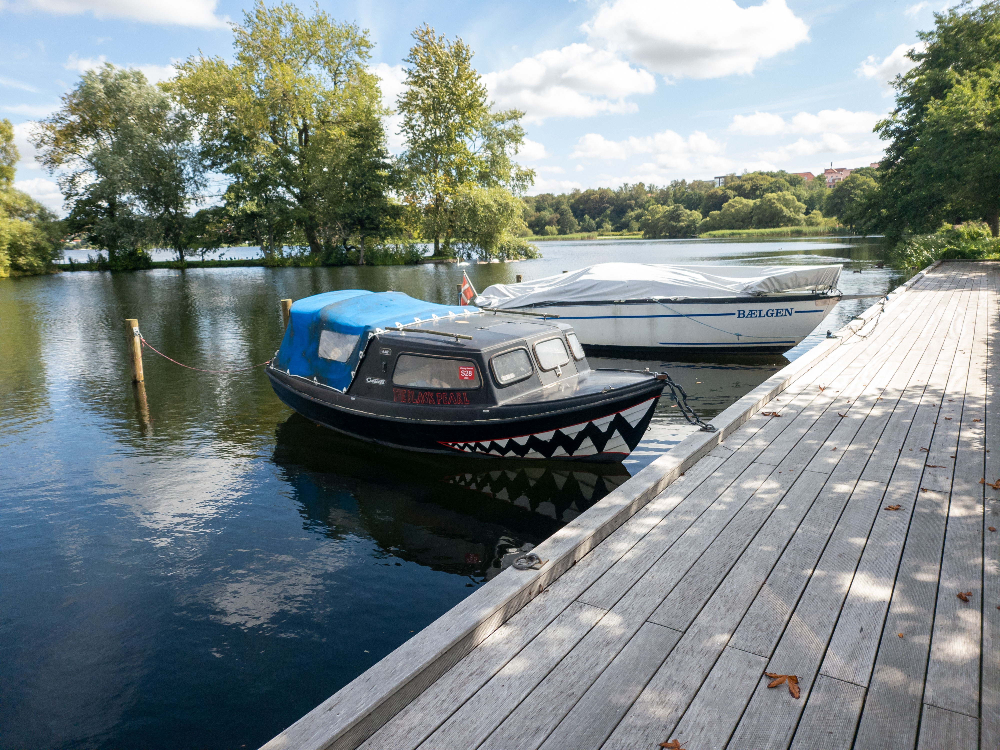
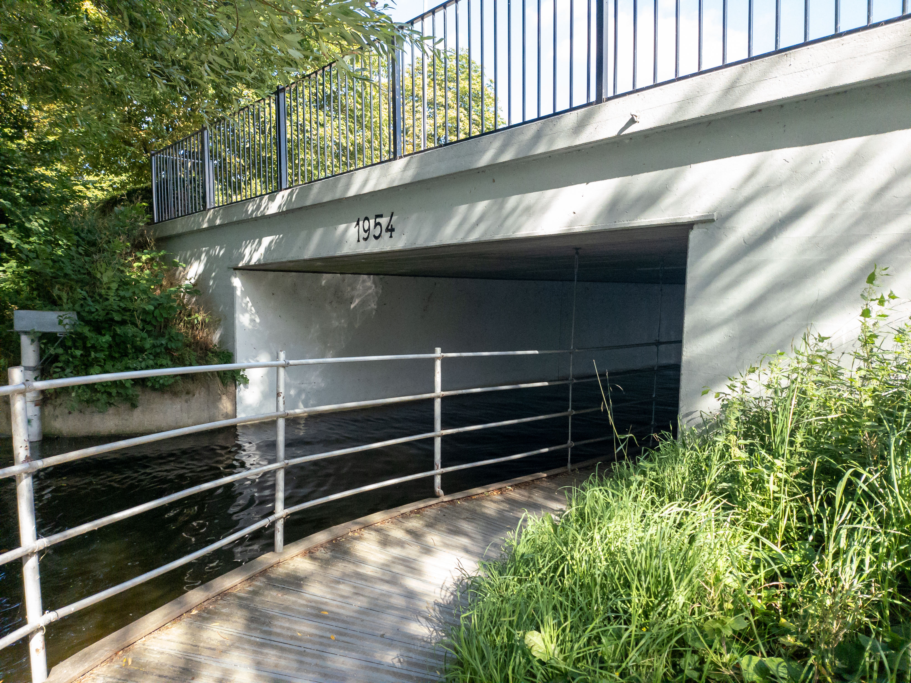
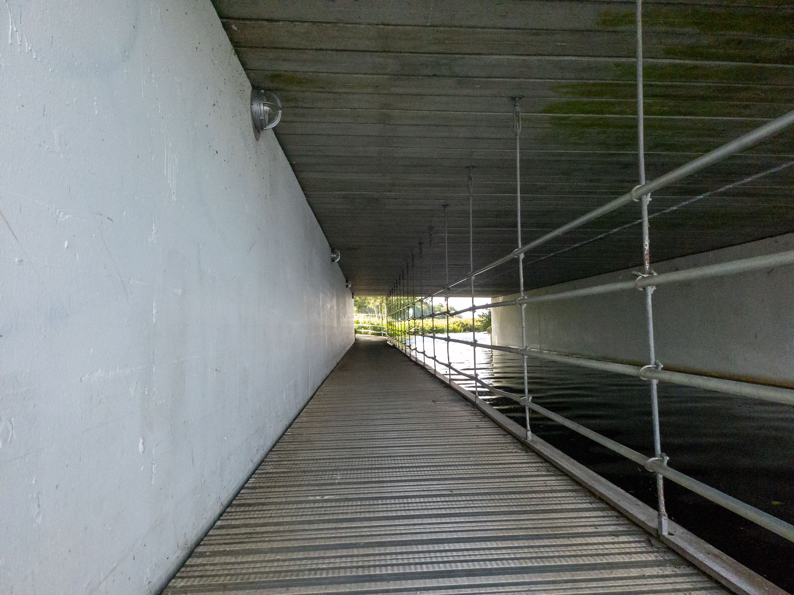
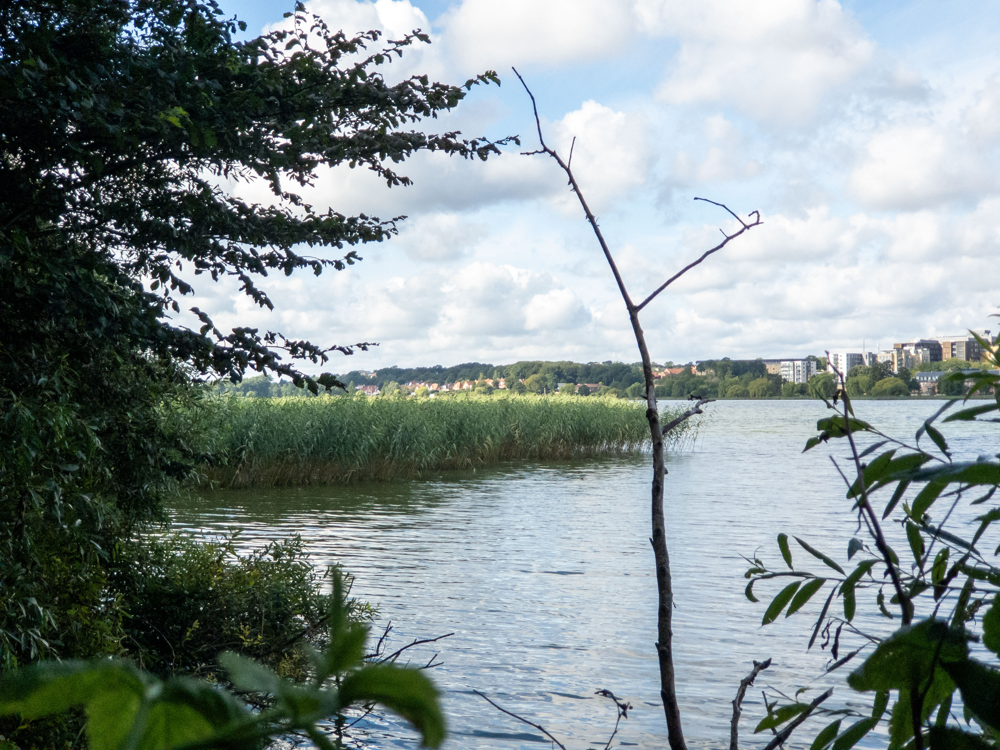
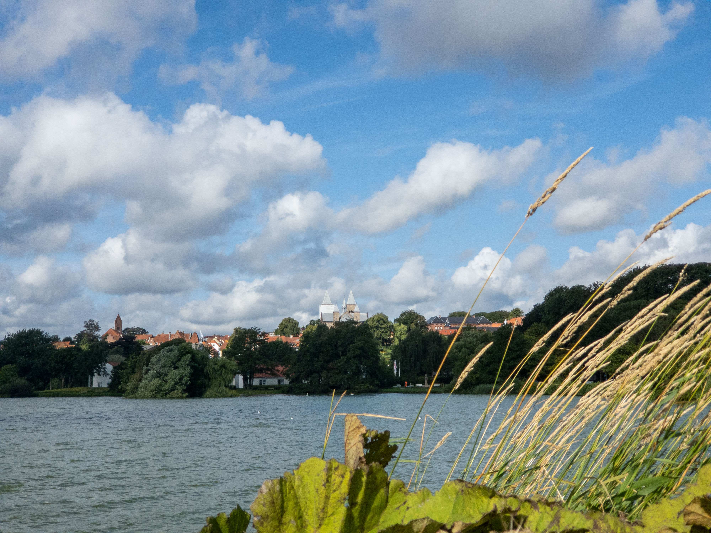
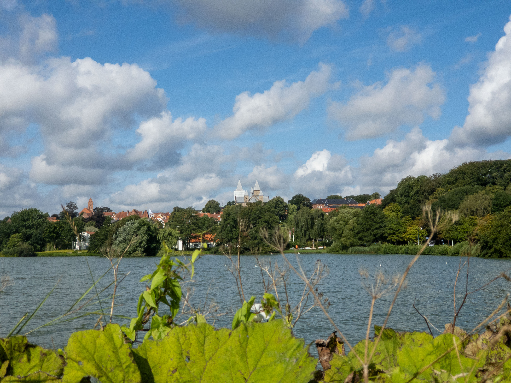
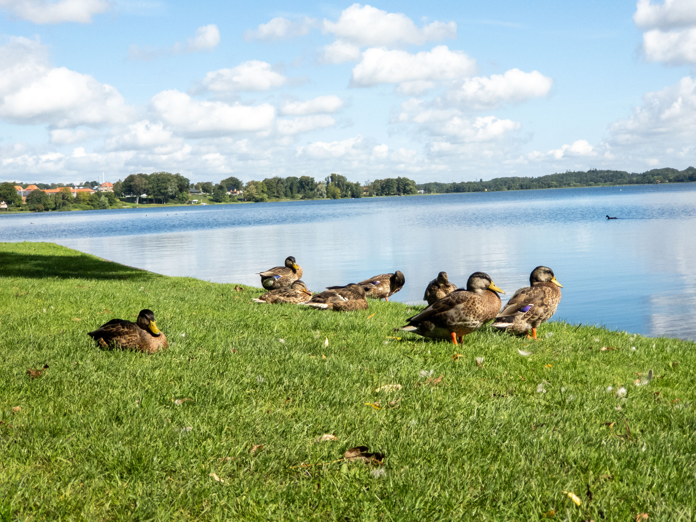

Bådene
Broen
Sivene
Kirken
Ænderne
Galleri
Bådene
Broen
Sivene
Kirken
Ænderne
Galleri
Omkring søen i Viborg

"Inde i en lille bred ligger bådene og gynger. Mads sidder på bænken og synger"
se flere billeder her...
 
"Har du brug for roen, kan du gå en tur under broen."
se flere billeder her...

"Tager hånden gennem siv, de er så skarpe som en kniv"
se flere billeder her...
 
"I 1133 stod kirken færdig, var Viborg virkelig værdig"
se flere billeder her...

"Ænderne ligger og rapper, ikke stik fingeren i deres næb de napper"
se flere billeder her...